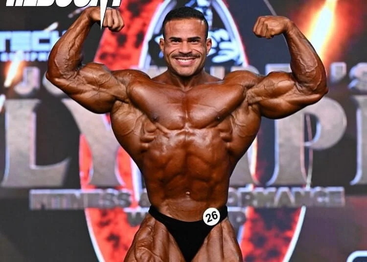
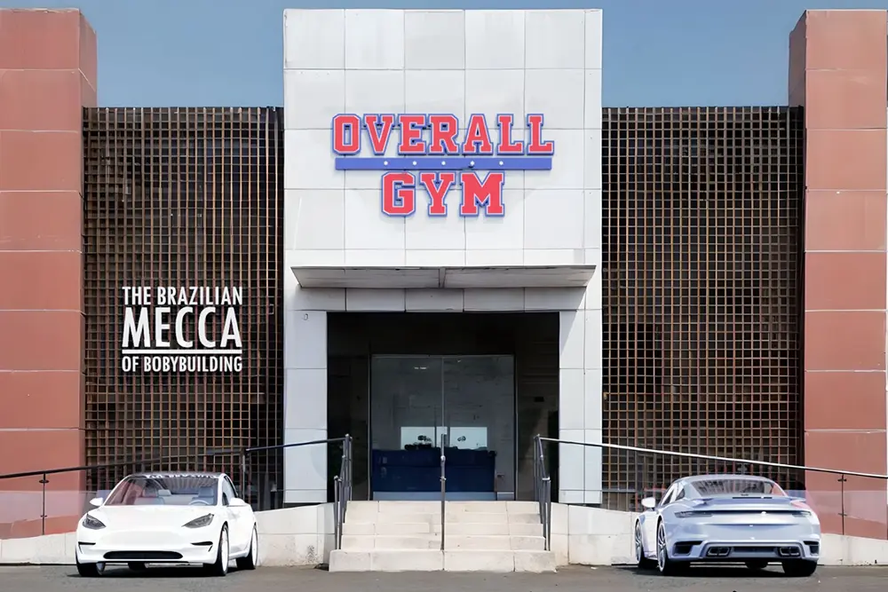

Nossa História
A história da Overall e fundação em 28 de março de 2016, no bairro Hauer, em Curitiba

Seu grande inpacto no fisiculturismo
ambiente especializado contribuiu para a formação e aprimoramento de diversos atletas renomados.

A Overall HOJE!
A Overall é extremamente importante para os atletas Brasileiros.